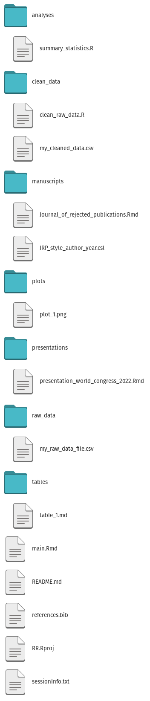

Files
1 File types and structure (folders)
1.1 The root
1.1.1 One root folder for each project
Should contain
- RStudio project (*.RProj)
- README.md
- sessionInfo.txt
- Your main R scripts
- Your RMarkdown and quarto scripts
- Relevant subfolders (/custom_functions, /gfx, /data, etc)
1.2 Files and folders
1.2.1 Make and use your own folder/sub-folder template for new projects

1.3 File types
- Text always preferable to binary files
- Markup files (HTML, XML, etc) are human readable, but can be complex
- Application files (.odt, .docx) are often either binary files or very complex markup files
gfx/prefer_text_files.pdf
gfx/prefer_text_files.pdf
gfx/prefer_text_files.xml
1.4 File types
Stick to simple, human-readable files like R-scripts, markdown, csv files, etc, as far into the process as you can and only generate pdf, word, tiff, jpeg etc files as the final step.
If any characters look weird in a simple txt file (it does happen) – it’s probably the character encoding – just stick to UTF8/UTF16
- By the way, what do you think the first thing the typesetters at Springer does with your manuscript once accepted?
1.5 Files and folders
Main points
- Use a strict folder structure you can handle – make a template!
- Use relational folder paths if possible
- Use human-readable files only if possible (txt, md, Rmd, csv, etc)
- Only use non-human readable files for ‘final output’ (pdf, docx, xlsx, etc)